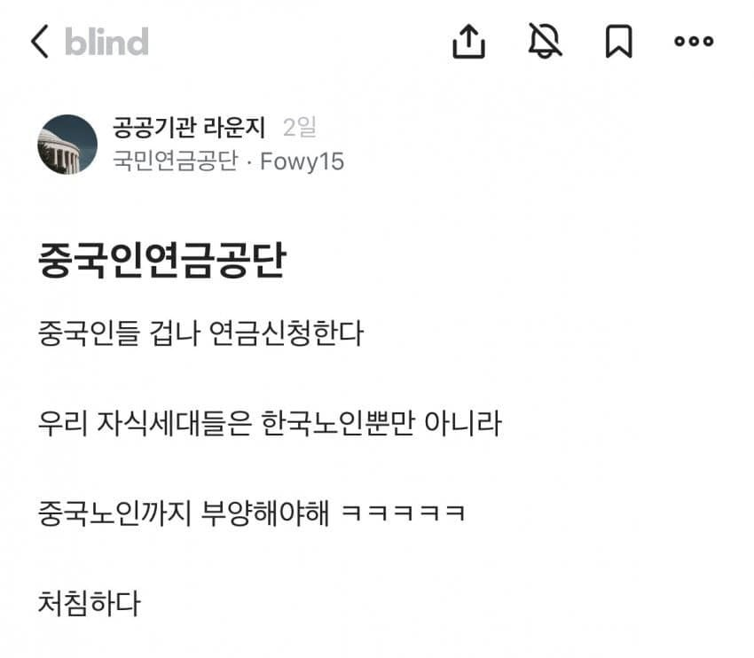

ㅋㅋㅋㅋㅋㅋㅋㅋ 이건 너무 억까잖아. 7
외국인한테 투표권 주는 것부터 이상하지 않아? 주권은 국민이 행사하는 거잖아.

그렇게 안일하지는 않을텐데 중국인한테 어케 연금을 줘??????
세금내고 정당히 받을 애들이면 당연히 받겠지 중국인이라도
근데 뭐 싸잡아서 중국인이 연금을 받는대
정당하다의 기준은 뭐임?
외국인들때문에 연금 고갈 앞당겨지고 젊은세대가 피해보는게 국민연금 취지에 맞는거임?
1달일하고 119개월치 추납
국내체류하지않고 본국돌아가도 수령가능
외국이라 생사확인이 안되어서 부정수급가능
안일한게 맞았음..
국민연금 예산은 미래세대에서 충당하는거임
그걸 외국인이 누린다는게 이상한거지
그렇게 안일했는데 그동안 몰랐다가 안일하다는걸 눈치까고 받아먹기시작하니까 문제가 된것
애낳으나고 징징거리는게 중국노인들 부양할려고 하는거였냐 ㅋㅋㅋ
국?민연금
무료변호사들 분노의 챗지피티 제미나이 풀가동중ㅋㅋㅋ
우리회사 조선족새끼있는데 지마누라 아프니깐 중국에서 데려와서 직장부양가족으로해서
의료보험적용해서 여기저기 다 수술받고 가더라
시이벌 검머외 꿀통에 너도나도 숟가락 꽂고있네.
비거주 외국인은 쳐내야되는거 아님?
외궈 부양가족은 손본다고하긴 하더라
그거 언제적 얘기인지 물어봐도 됨? 요즘은 국내 6개월 이상 체류해야 부양가족 등록 가능한걸로 알고 있어서. 대한민국에서 나고 자란 것도 아닌 조선족이 수술 받으려고 대한민국에슈 6개월 기생한거면 그것도 개짜증나긴 하다만...
모르겠고 빨리 고치셈
몇년을 받아먹어야 이득인건지 모르겠네
어차피 한국 망했는데 걍 줘라
외국인에게 세금 빨아먹을라고 탁상행정했다가 외통수걸린거지 뭐 개병신집단임 ㄹㅇ
GPT한태 물어봤어도 허점 찾아줬을탠데 시발 ㅋㅋㅋㅋㅋ